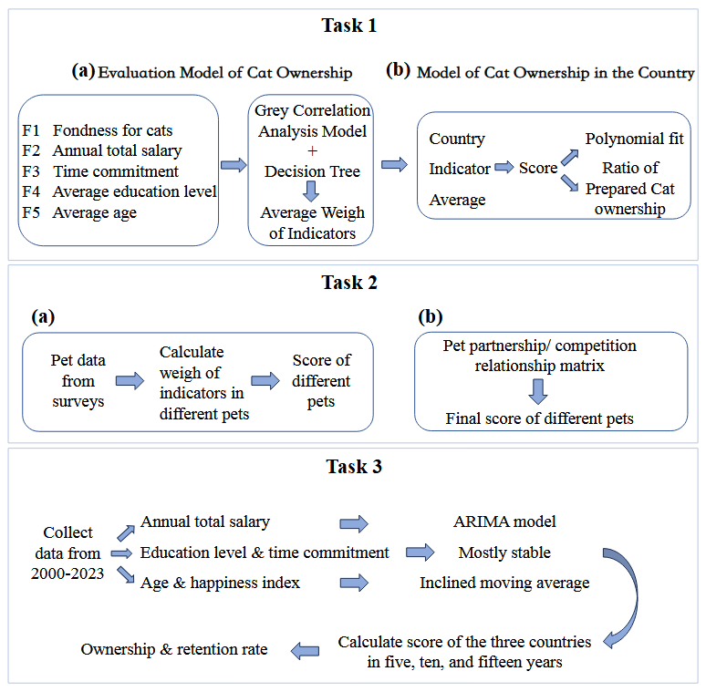
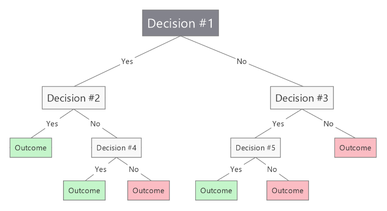
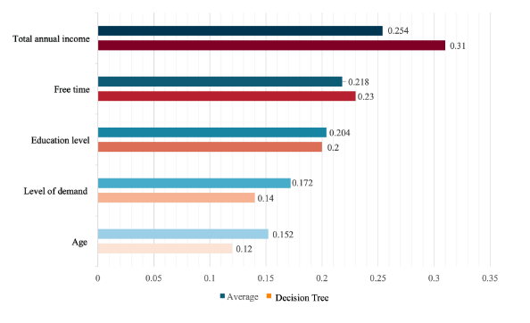
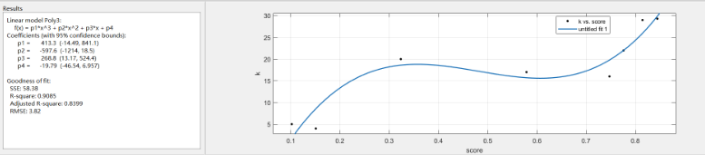
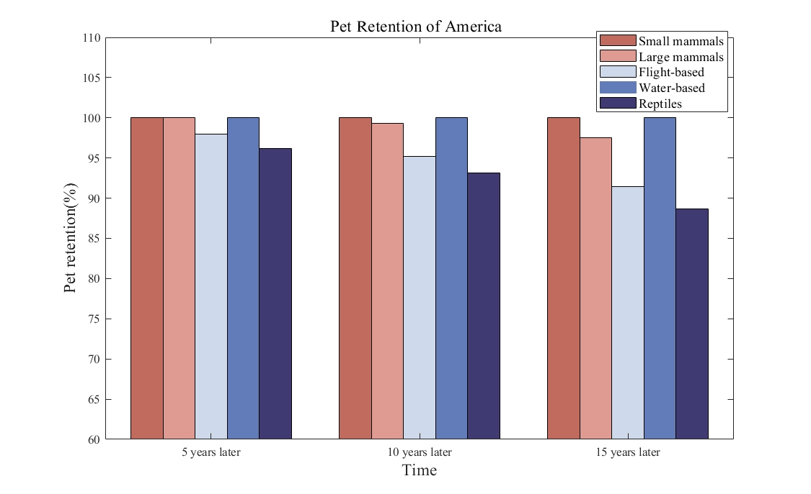
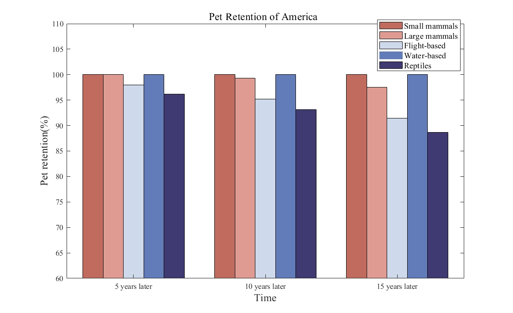
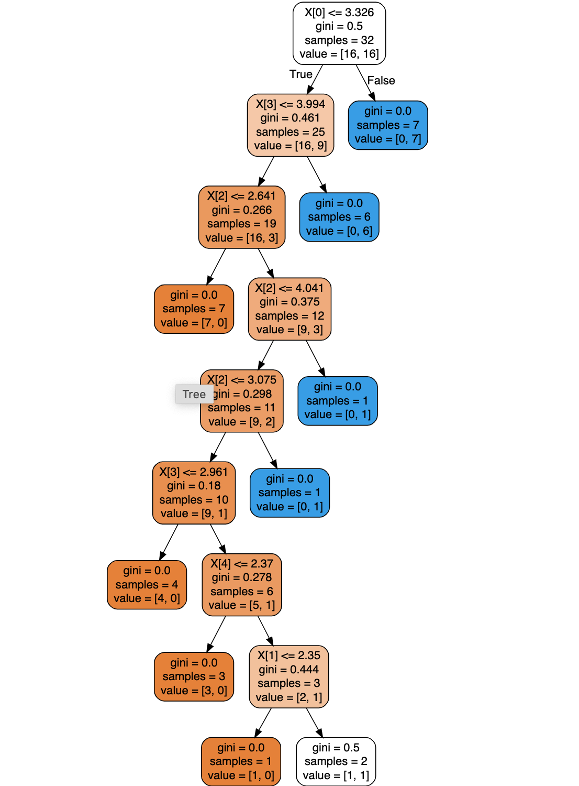
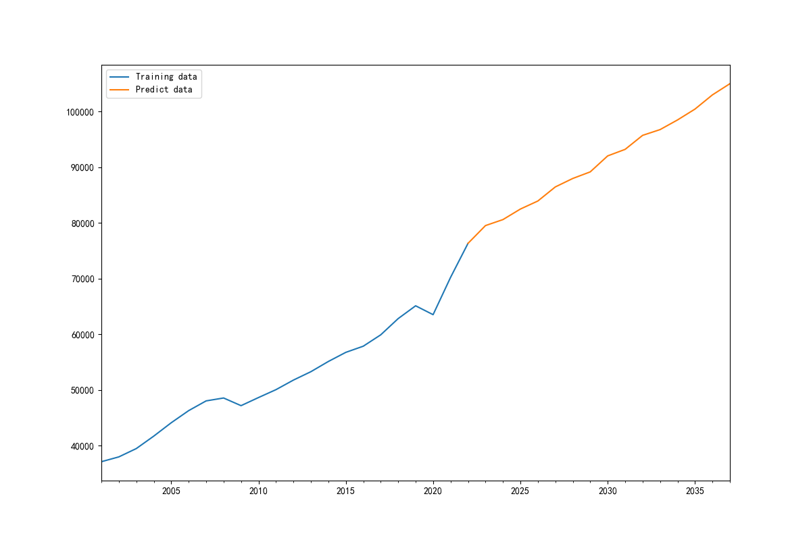
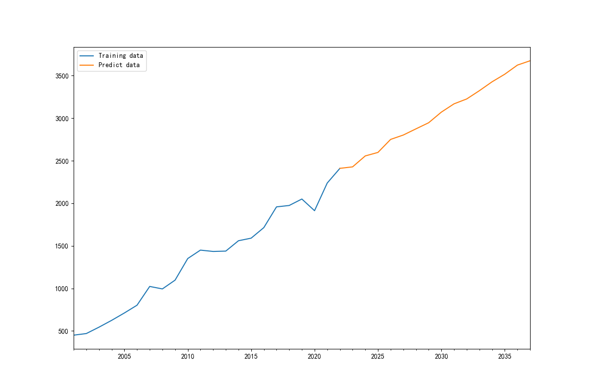

1. Abstract
During the long river of human history, humans and pets are inseparable. Pets are treasured due to the joy they’ve brought owners and the companionship it brings, cre- ating loving memories. The pet market has risen in the few years, especially during the COVID, when the number of pet owners surged. At the same time, however, more and more pets are getting abandoned, ending up stray and overcrowding the shelters, creat- ing a big burden. People have long been confused of who’s suitable for raising pets, and concerns have been increasing everywhere. To handle this situation, this article will ex- plore a decision evaluating model that help determine what households are suitable for owning a pet and forecasts future pet ownership.
In question one, the research team identified the subjective and objective factors, which are age, time commitment, annual salary, education level and level of demand that deter- mines whether a household is suitable for owning a cat. The team first used Topsis and Entropy methods to obtain the indicators. After that, we decided to use Decision Tree and Grey Correlation methods to calculate the weights and determine the scores. The re- sults showed that total annual income and their free time (time commitment) were more important for whether a household could afford to own a cat. The team then found repre- sentative countries, India, America and China, their scores and the number of households that currently have cats.
For the second question, the team found four other species, birds, fish, large mammals, and reptiles, and re-used the model from the first question to find the weights of the factors. The team also used the households from Question 1A and calculated scores for each to see which households were prepared for each pet species. For Question 2b, the team considered using two formulas based on whether different pets could be co-owned, raising the household score if the pets were allies and lowering the household score if the pets were competitors.
For the third question, the team solved for the different indicators by using time series method, moving average method, to find out the value of the rate of change of each indicator in the three geographic regions in the next 15 years. The 5, 10, and 15 years of data for each indicator were brought into the model for the second question to find the ownership and retention rate. The results showed that people will have more pets, and that the problem of pet abandonment will get worse if it is not controlled.
What the team did was use multiple models. The different models can testify and coordinate with each other, achieving the most systematic and comprehensive results.
Keywords: Pet raising, Topsis, Entropy method, Decision Tree, Grey Correlation, ARIMA, Time series, Moving average method.
2. Letter of Recommendation
Dear directors of IMMC-A,
Hello, and thank you for taking your time looking at our model. We are Team 24397795. Considering your problem and concerns for stray pets and crowded animal shelters, our model explores the preparedness of households owning pets and the future of pets.
To create our model, the team decided subjective and objective factors of a household, such as their annual salary, time commitment, level of demand and others. By using the model and applying it in different types of households obtained from our questionnaires, we concluded characteristics of households that are suitable for raising pets and not suit- able.
Characteristics of households that are suitable for pets are households with enough money, enough time and has a high level of demand. They should also be patient with pets, kind to them, and they should be willing to learn how to care for pets. They should also prepare future plans for pets, or a least make sure no obstacles would make them abandon their pets. These could all make sure that the pets are living happily in the household with enough care.
Characteristics that are not suitable for having pets are for example, unstable emo- tions, anger issues, not willing to learn or care for cats, low time commitment, severe allergies, low wages and are not able/willing to afford veterinary care. These could lead to abandonment.
You should have second thoughts when seeing people with pregnancies and people with family members who oppose of raising pets. They could have problems with pets, which might lead to abandonment or giving away pets. They could end up in a home happily or roam in the streets based on the attitudes of the owners, making it crucial to confirm that the pets are with the right owners.
You can surely believe our model since we’ve assessed a number households and picked out the common features of good households and bad households. We’ve also used the model on a broader scale, assessing the number of families in countries that are prepared to raise cats, and used it with different types of species and multiple pets with in one household.
Our model do posses space for improvement, but we’ve made sure that it’s still usable for every situation. We’re still improving our model, and will give the latest version to you whenever we’ve made changes.
Thank you for your time and hope you have a great day!
Sincerely,
Team 24397795
3 Introduction
3.1 Background
Pets are non-endangered animals that are required by people who do not need them for occupational purposes. Known as companion animals, pets have been around with humans for centuries, offering a sense of purpose, stress relief, or company.
During COVID, with a number of people desperate for company, the numbers of pet owners surged. According to BBC, around 3.2 million households acquired new pets. But with the rise of the pet market, a new problem floats above the surface. Pets are reported to be returned back to the shelters that scaled back their operations ever since the COVID hit (Bartiromo, 2022), leading to more and more abandoned pets.
To protect the well-being of the animals and reduce the number of stray and aban- doned pets, it is crucial to make sure that they end up at the right place with the right people. In this case, perhaps a model is needed to help the pets find their right owners.
3.2 Restating and Analyzing The Question.
Question 1: In order to reduce the numbers of abandoned pets, the organization, IMMC- A requires the team to first, create a model that determines whether a household is suit- able for raising a pet. In 1b, the team is required to assess the model on a broader scale, determining the number of households suitable to raise pets in three countries or regions.
Question 2: Second, the team should generalize the model by using it for four types of other animals in six households located in the same region as mentioned in the first question. The team should also check how the model works when facing the situation with multiple pets. For 2b, the team considered using two formulas to raise the scores of the households if the pets were allies, or to lower the scores if they were competitors.
Question 3: Lastly, the question asks the team to consider the retention and pet ownership to calculate their potential.
This question requires the team to build a decision model, to determine whether each household is suitable for raising a pet, and to predict the the rends of the retention rate and potential pet ownership.
3.3 Assumptions for the Model
- If the household is already raising a pet, the household’s income, time, and other indicators are subtracted from the resources taken up by having an existing pet.
- The data the team collected is stable in the long-term.
- Families raising different pets in the household can have competitive or co-operative relationships.
- The questionnaires were filled precisely by people.
- The indicators of each country/region has a trend.

4 Creation of the Model
4.1 Choosing and Determining Indicators
The team decided to split the factors into subjective factors and objective factors. Then we refined our first indicators and split them into secondary indicators.
4.1.1 Objective Factors
First, the team considered the wages of the households. Pets could only be raised properly if given enough food, a good environment and others, which could highly in- crease the financial burden of the household if they have low wages. This is then refined into the residential area, degree of health, and the percentage of salary that are spent on pets. Studies have shown that people with higher wages are more likely to live a healthier lifestyle, and acquire larger residential area. Depending on the percentage of salary spent on pets could also determine the financial burden of the households.
Second, free time/time commitment is also considered (free time is considered as the time available when households are not working, sleeping in one day). There should be enough time for households to ensure that the cat is fed, showered, and happy. At the same time, the elasticity of the job is considered as well, since there could be night shifts, working overtime that could affect the free time. Not only so, the willingness to raise pets are also taken into consideration. Households are not suitable for having pets if people have them and the time to take care of them when they dont to.
Thirdly, the education level of households. This could be further elaborated and ex- plained by the educational resources they could obtain and their knowledge of cats. Their willingness to learn is also an important aspect, since these indicators would all decide whether youre raising a cat scientifically or not.
It also includes their age. Studies have also shown that pets, especially cats are popu- lar among young people. This could be elaborated into whether theres children or seniors in the house, since having young aged children or seniors in the household could increase the burden of the family; the long-term plans of the future household, to see if the pets are able to stay long enough in the household. As the picture mentioned in figure 2, 30- years old would be the prime age for having pets.
We chose to use first indicators, since its based on known facts, various studies, sur- veys that shows a direct correlation between secondary indicators and first indicators. The team then directly turns secondary indicators into level one indicators, saving time and making it user friendly.
4.1.2 Subjective Factors.
The level of demand for cats should regarded as an indicator, expanding this into their emotional stability: they have to be patient, reliable, since sometimes cats could get

on peoples nerves; allergies, since allergies could cause uncomfortable symptoms, and if worse, death; support from nearby family and friends, since there could be negative voices discouraging households the thought of raising a pet; if they like cats or not, be- cause raising cats require a strenuous amount of energy.
These secondary indicators could be analyzed using entropy scoring methods to quan- tify the level of uncertainty or randomness in the demand patterns.
5 Model of Households for Cats
5.1 The Model of Decision Tree and Grey Correlation
In this question, the team collected data from 100 different families in the form of ques- tionnaires on the indicators mentioned above. The data were categorized into objective factual data and subjective judgmental data. Objective indicators and subjective indica- tors were asked in the form of scale questions. After obtaining the questionnaires and screening out the not valid ones, the group quantified the objective data on a scale of 1- in order to eliminate the influence of different aspects on the evaluation results. Finally, the team used SPSS software for modelling and solving the problem, and drew conclu- sions by combining two correlation analysis models: decision tree and grey correlation.
A decision tree is a predictive analytic model expressed as a tree structure (including binary and multinomial trees), which represents a mapping relationship between object attributes and object values. Each node in the tree represents an object, while each forked path represents a possible attribute value, and each leaf node corresponds to the value of the object represented by the path from the root node to the leaf node.

The decision tree algorithm is introduced in this study to facilitate the understand- ing and interpretation of the conclusions; to analyze nonlinear relational data in a more direct and efficient way; and to be suitable for complex problem solving. The decision tree is constructed based on entropy increment of information entropy, and the specific information entropy and entropy increment formulas are uses the function:
This is also used to perform feature selection through information gain. The decision tree is divided based on information gain:
The so-called information gain is the information gain g(D,A) of feature A on the train- ing dataset D is defined as the difference between the information entropy H(D) of the set
D and the information conditional entropy H(D|A) of D under the given conditions of feature A:
Grey correlation analysis model is introduced in this study to find the indicator that is the most relatable. The dependent variable, Y in the parent sequence is known as whether to raise pets or not, while X in the sub-sequence is known as the function below, with m as the five indicators and n as the data from 100 questionnaires:
Since the values of the scale questions are 1-5 and on the same magnitude, thus no normalization is required. The team then calculates the correlation coefficient of each indicators with the parent sequences and the sub-sequences, and uses the function below:
This shows the bipolar maximum and minimum differences. Then, for finding Z, the team uses the function:
Lastly, the team calculates the relatedness of the indicators.

The model used in this study is intuitive, since the tree-like structure generated by the decision tree is logical and clear; the grey correlation analysis straightforwardly displays the correlation ranking of the indicators, which helps focusing on the factors that have the greatest impact on whether or not to own a cat.
Subsequently, the group used an entropy weighted topsis analysis to find out the weights of the subjective secondary indicators. In this way, the team can translate the
Table 2:Weights using entropy method
| Terms | Information entropy | Utility of information value | Weighting factor |
|---|---|---|---|
| Fondness | 0.9757 | 0.0243 | 20.2% |
| Allergies | 0.9418 | 0.0582 | 48.4% |
| Support from families | 0.9808 | 0.0192 | 16% |
| Stability of emotion | 0.9815 | 0.0185 | 15.4% |

second level indicators to the primary indicators. The households answers of each scale question multiplied by the weight of the second indicator was the result of the family’s score.
Examples of the three households suitable for raising a cat:
1. The Business Woman
Annual Salary: $85,
Time Commitment: Moderate; works full-time but has flexibility for breaks and works partially from home.
Age: 45 Education Level: Master’s Degree Level of Demand: Medium
Score: 3.3 (5 as in the highest and 1 as in the lowest)
The professional is able to afford veterinary care, quality food and enrichment toys.
Table 3:Weighing of Features as a Table
| Terms | Grey correlation | Decision Tree | Average | Ranking |
|---|---|---|---|---|
| Annual Income | 0.2007 | 0.308 | 0.25435 | 1 |
| Free time | 0.2068 | 0.229 | 0.2179 | 2 |
| Educational level | 0.2038 | 0.205 | 0.2044 | 3 |
| Age | 0.1846 | 0.119 | 0.1518 | 5 |
| Level of demand | 0.2041 | 0.14 | 0.17205 | 4 |
She can also provide interaction and care for the cat, feeding it regularly and such.
2. The Married Couple
Annual Salary: Retirement income of around $48,
Time Commitment: High; home most of the day and can provide constant compan- ionship.
Age: Around 32
Education Level: Bachelors degree
Level of Demand: Medium to high demand for wanting companionship.
Score: 3.9
The retired couple is a good household because it provides enough time for caring for pets, a stable environment, and enough money to afford the expenses.
3. The Family with Child
Annual Salary: $120,
Time Commitment: Depends, both parents work, but children are home earlier and can play with and care for the cat.
Age: Parents around 55 years, child 25 years
Education Level: Bachelors degree, Undergraduate
Level of Demand: high, the child love cats
Score: 3.9
The income ensures financial stability for health care, nutrition, toys and others, chil- dren can also provide enough time for care and companionship. Though the emotional stability might not be as high, the fondness for cats is skyrocketing.
4. The Busy Single Professional
Annual Salary: $78,
Time Commitment: Very low; frequently travels for work and often stays late at the office doing studies and writing essays
Age: 60
Education Level: Master’s Degree Level of Demand: Medium to low, since hes too busy to care for cats.
Score: 2.2
Although hes financially stable, a lack of time commitment for cats could make him neglect the needs of the cat such as attention, necessary care and companionship, making the environment unsuitable for the cat.
5. The High School Student with A Single Parent that Only Gives Him Money
Annual Salary: $30000, all of these money are from his mother
Time Commitment: Low; busy with classes, studying, and social activities. Housing restricts pets.
Age: 15 Education Level: High School
Level of Demand: Medium to high; looking for a companion animal.
Score: 1.9
Low financial stability might not make the person able to afford the costs of raising a cat. Pursuing studies and a not so flexible schedule could lead to low time commitment and an unstable environment for cats.
6. The Family with Severe Allergies
Annual Salary: $88,000
Time Commitment: low, since the parents are usually at work and the children are busy studying.
Age: Parents are around 50, one child is mostly in college while the other is in high school.
Education Level: Parents graduated from community college; the children go to nice schools.
Level of Demand: Especially low for cats since allergies. Quite low for other pets as well.
Score: 1.9
Even with a suitable income and time commitment, severe allergies to cat dander in one or more family members make a household environment hostile to cats. Health risks associated with allergic reactions, including asthma or severe allergic reactions are detrimental to owners.
5.2 Model Usage in Different Countries
In this question, the team chose 8 representative countries, Finland, Japan, Iceland, UK, Mexico, Pakistan, Kenya, and United Arabs Emirates. According to the objective factors, the team found their average annual salary, average working time, percentage of people’s access to higher education, median age, and their happiness index. After finding these data, the team normalized these and calculated their total score. By using the scores as the horizontal co-ordinate and the number of households with cats as the vertical co- ordinate, the team fit data into a graph and found the function, in figure 4.

The graph plotted had the function:
The team chose China, India, and America as the three countries to calculate the number of households that are prepared to raise cats. The team found the value of each indicator and calculated their scores, which are 0.53, 0.13 and 0.84. Then according to the function, the graph had values with the percentage 26.4%, 20.4%, and 14%. The team then multi- plied the percentage with the household numbers. For America, there are (131.43million times 14%) around 18.4 million households are having cats as pets. In china, (494.16 mil- lion times 26.4%), around 130 million households that raise pets, while in India, there are (302 million times 20.4%) around 61.6 million households raising pets.
6 The Use of the Model in a Broader Perspective
6.1 Usage for Different Pets
Since the model created in 1A is general and able to be used in every condition, the team re-used the model. According to the classification of animals, the team decided to split the pets into five different categories, small-medium sized mammals, large mam- mals, reptiles, birds and fish. The team then picked the most representative pet in the category.
1. Birds Birds are a wide category since around 6.1 million households own pets (safe worldwide), making it a universalized pet. But to make it more specific, the team narrowed it down into a representative: The crested myna.
2. Fish Fishes are easy to raise, has a low cost, making everyone want them as pets. Especially goldfish, which are seen commonly in every household.
3. Llama In large mammals, llamas are popular as companion pets. Although the numbers of llamas are not calculated, they are raised as pets known for their gentle, calm nature. They also require less intensive care than cows and adapt well to environments.
4. Snake Snakes are considered as popular pets. Nowadays more and more people online are raising snakes as pet, since they use low costs and are easy to raise.

Looking at the given figure (2) of the decision tree, the team summed up the factors that affects the standards of the household. For snakes, the education level is the highest, and commitment time is the lowest; while for llamas, the commitment time is the highest, and education levels are the least important factor. Fishes are raised according to the level of demand, while needing lower time commitment and age. Birds also require a high level of demand, but low levels of education and age.
The team used the households mentioned in 1A.
For household A, the professor would be suitable for almost any animal, since every factor is appropriate for having a pet. But to find out which pet she is most prepared for
Table 4:Weigh of the Features in Five Different Species
| Terms | Annual income | Free time | Educational level | Age | Level of demand |
|---|---|---|---|---|---|
| Small mammals | 0.2544 | 0.2179 | 0.2044 | 0.1518 | 0.1720 |
| Large mammals | 0.2030 | 0.2622 | 0.1467 | 0.1821 | 0.2059 |
| Flight-based | 0.1948 | 0.1983 | 0.2095 | 0.1916 | 0.2059 |
| Water-based | 0.2515 | 0.1135 | 0.2101 | 0.1101 | 0.3148 |
| Reptiles | 0.2231 | 0.1559 | 0.2098 | 0.1509 | 0.2603 |
would depend on her level of demands. The scores of birds are 3.2, higher than llamas, 3.1, but not as high enough as fish, 3.3. The highest would be having a snake, which is 3.
For household B, the couple are prepared for every animal, since they have suitable conditions for raising a pet. Cats, fish, and the score for snakes are all high, ranging from 3.7 to 3.9. But the highest of the all would be the llama and the crested myna, with the score of 4.
For household C, with their enthusiasm and high level of demand, they are prepared for every pet. Their high scores for every pet, 4 for crested myna; 4.1 for llama and snakes, and 4.2, highest for fishes.
For household D, the professor would not be prepared for any pet, due to low demand and little time commitment. The scores are all around 2, ranging from 2 to 2.5.
For household E, this household isnt prepared to raise almost every pet. Low income, little time, and With scores of 2.1, 2, 2.3, they all fall below the appropriate score for raising pets.
For household F, although allergic to cats, they might not be suitable to raise other pets. Their scores, around 2.2, 1.9 and 2.4 are all below the score suitable for raising pets, making this household not suitable.
6.2 Usage for Different Pets in the Same Household
For this question, the team considered the relationship of the pets in the same house- hold. There are two relations: competitors and allies. The team first calculated the scores of the pets. By using figure 7, the team came up with the relationships of the pets.
Pets that are competitors, such as birds and cats (cats might eat birds), would not be suitable to be raised in the same household. So the team used the function
to find the out the score of the household. For this household, the team found out the minimum of the score and divided it by e, with S as the score and i as the number of pets.
For pets that are allies, such as llamas and fish, the team uses the maximum of the score and multiplies it by e, with S as the score and i as the number of pets.

7 The Model in the Future
In this question, the team used theARIMAmodel.
First, the team created aAR, the auto regression model, for predicting education levels, work hours and income. TheARmodel describes the relationship between current and historical values, using the variable’s own historical time data to make predictions about itself, using the function:
WhereXiis the predicting value of the i year,a 1 is the coefficient that effectsX 1 .a 1 in this article is the composite weigh of the factors concluded by the decision tree and grey correlation.
Due to the multiple factors being influenced by many social factors, there is a slight volatility in the changes in the values. So we introduced the term ’white term’ as an important factor in the AR model, with the function:
The function would be a pureARprocess:
In theARmodel,if it’s not a ’white noise’, it is usually considered to be a q-order moving average. That is:
Considering education level, work hours and income factors has a relatively smooth trend, the team decided to use this model.
After that, the team considered their age and happiness. The three countries chosen in this text has a stable public welfare and is not so related to the historical value. AR cannot predict those, so the team decided to useMA, when the current values of the time series are not related to the historical values, but depend only on a linear combination of historical white terms. TheMAmodel is obtained as:
After calculation, the team found out the scores of the three indicators of each country. Then, our team multiplied the scores with the weight of the indicators, finding out the total score of the country in five, ten, and fifteen years. The team then put the scores into the function mentioned in 1b, calculating the number of households that are prepared to raise pets.

After comparing the number of households that are suitable to raise pets in each coun- try, the team calculated the retention rate of pets using the function above. An example of the retention rate in the country China is in figure 7.
The graph shown above tells the retention rate and pet ownership rates. We can see that the mynas and corn snakes, which are influenced by the age indicator, are likely to be abandoned due to aging of the population. In China, the problem of aging have made the abandonment rate of corn snakes relatively high.
While in India, due to a lower happiness indicator, the level of demand decreases, leading to high abandonment rates for llamas, mynas, and corn snakes.

 

Table 5:Retention Rate and Ownership of Pets in Different Countries

8 Model Strengths and Weaknesses
8.1 Strengths of The Model.
- The team decided to use the decision tree algorithm, which is more intuitive and efficient to analyze nonlinear relational data, suitable for complex problem solving, and can feature selection through information gain. The study also uses the grey correlation analysis model to find the indicator of maximum correlation. The gray correlation anal- ysis model is able to provide reliable results despite the small number of samples and is insensitive to the data, effectively overcoming the uncertainty of the data.
- The team used the time series ARIMA model to predict the values of the indicators. The model requires only endogenous variables without the use of other exogenous vari- ables; it can effectively and accurately predict variables that change over time; it is prac- tical, can be highly generalized, and can be applied to other models with time-periodic variations.
8.2 Weaknesses of The Model
- Some algorithms have high requirements for data accuracy. For example, the deci- sion tree model has strict requirements on the accuracy and quality of input and output data; is more sensitive to data and is susceptible to disrupting data. When dealing with unbalanced datasets, the decision tree model may tend to favor the dominant one, requir- ing attention of the stability of the data.
- Although gray correlation analysis reveals the relationship between indicators, it cannot provide a cause and effect explanation. Therefore, the decision tree model was used in this study to show the visualization of the decision-making process to help with understanding and drawing conclusions.
- The time series ARIMA model has a more complex calculation process with more steps; it requires that the time series data must be stable, or else differential processing is needed. Also, the model can essentially only capture linear relationships, which is suitable for forecasting with linearly varying data, but cannot capture nonlinear relation- ships.
References
[1] School enrollment, tertiary (% gross) | data., September 2023.
[2] Global: Oecd population with tertiary education, March 2024.
[3] List of countries by average wage, March 2024.
[4] List of countries by tertiary education attainment, March 2024.
[5] HM Revenue & Customs. Total households in india(2010 2021, million), August 2022.
[6] HM Revenue & Customs. List of countries by average annual labor hours., Decem- ber 2023.
[7] HM Revenue & Customs. Bea interactive data application., February 2024.
[8] Layard R. Sachs J. D. Neve J.-E. D. Aknin-L. B. & Wang S Helliwell, J. F. World happiness report 2023., March 2023.
[9] Evelyn Aditi López-Flores Vargas-Estrada D. Laura Olivia Arvizu-Tovar Juan José Pérez-Rivero Iván Juat’rez-Rodríguez Alonso Sierra Resendiz & Orbelín Sobera- nis Ramos Sheila Irais Peña-Corona, Jose Pablo Gomez-Vazquez. Use of an extrapo- lation method to estimate the population of cats and dogs living at homes in mexico in 2022.Veterinaria México OAk, 9, 2022.
[10] Thien.Phung. Unleashing insights on pet owners, March 2024.
9 Appendix
9.1 The Decision Tree for Other Species.

9.2 Data in Question



